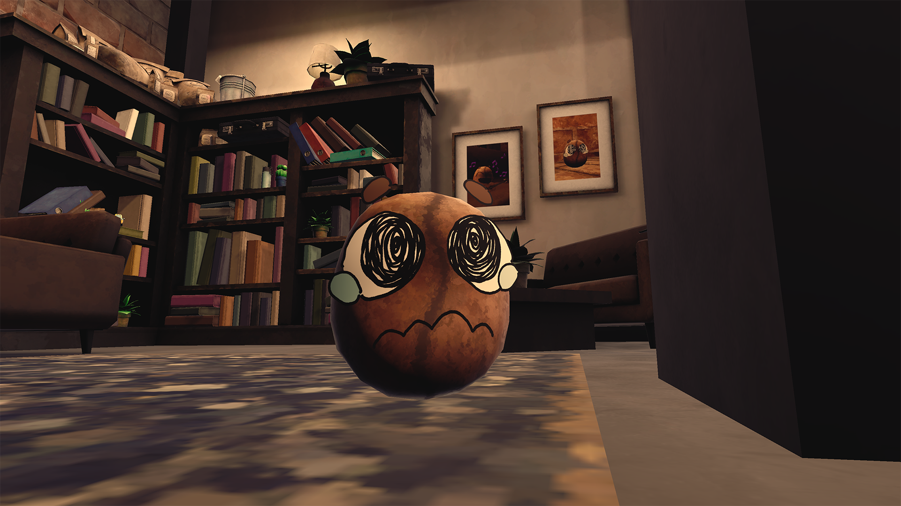
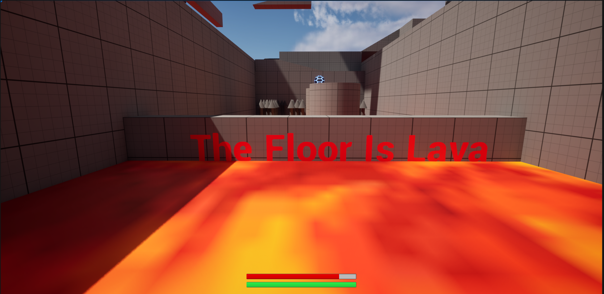
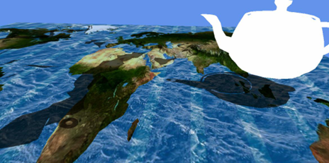
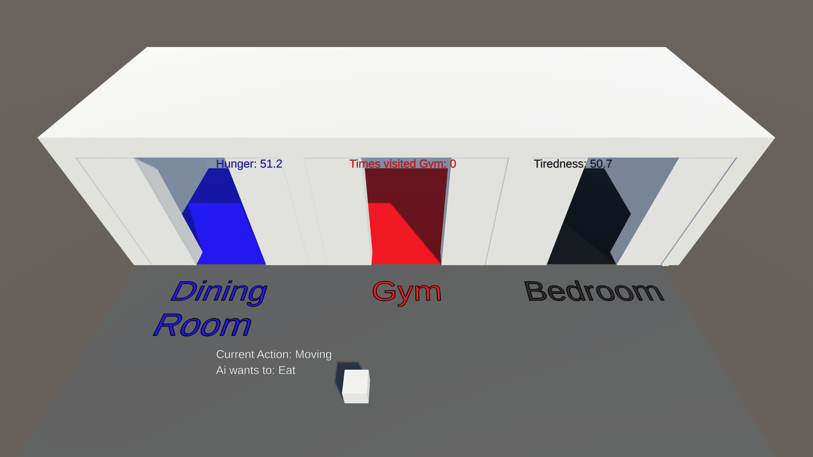
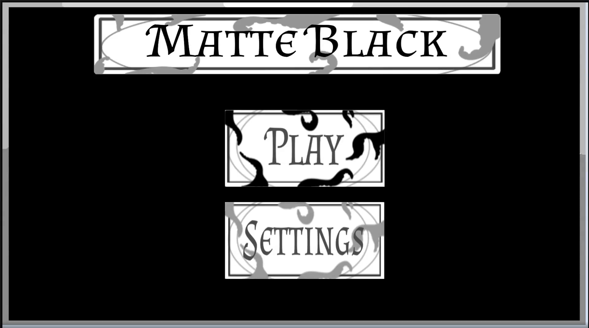
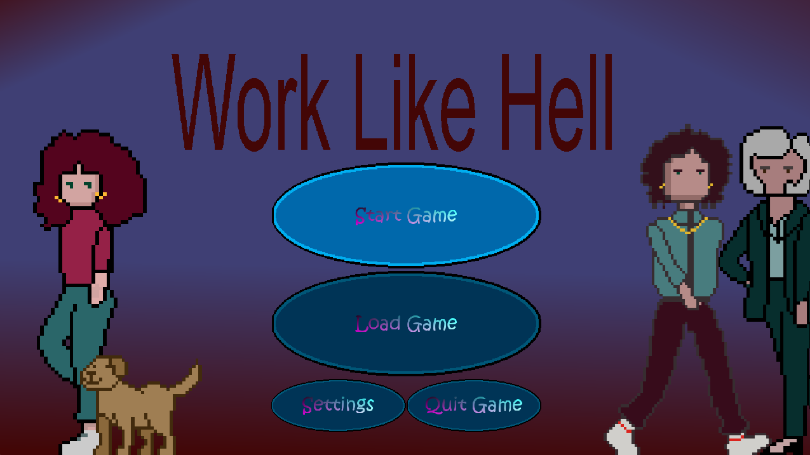
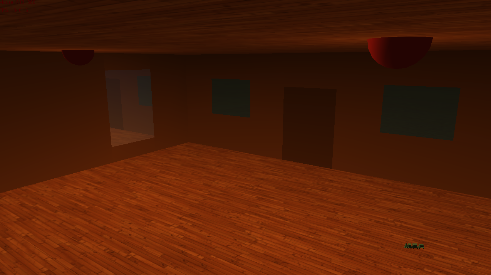
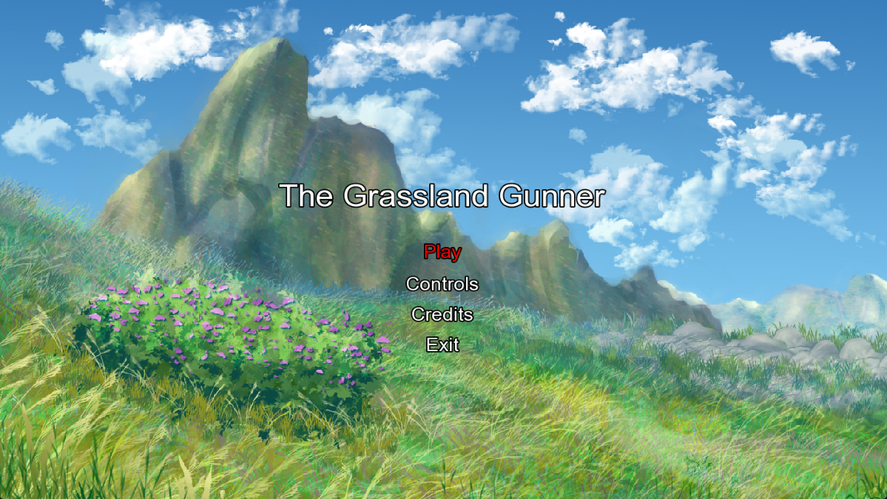

Game Developer · Gameplay Programmer · Recent Graduate
Building gameplay systems, prototypes, and polished interactive experiences.
I am Andrew Burt, a recent Computer Game Applications Development graduate from Abertay University. I am focused on gameplay programming, systems design, technical problem-solving, and building small but complete game projects. Outside of university work, I continue developing games in my spare time, experimenting with combat systems, movement mechanics, procedural generation, AI behaviour, and player progression.
About me
Recently finished university and continuing to build games.
My work sits mainly around gameplay programming: taking a mechanic from an idea, making it playable, then improving it through feedback, iteration, and better feedback systems. I enjoy building the parts of a game that make it feel responsive, readable, and rewarding.
My portfolio includes solo and group projects using Unity, Unreal Engine, GameMaker, SFML, and OpenGL. These projects cover player interaction, UI, progression, AI decision-making, movement systems, level design, graphics programming, and complete game-loop implementation.
Projects
Selected work
Click a project to see a dedicated breakdown of my role, technical contribution, and screenshots.

Coffee, Run
A team Unity project about running a coffee shop under pressure, serving customers, handling upgrades, and progressing through increasingly difficult days.
View project →
The Floor is Lava
A solo Unreal Engine obstacle-course prototype built to test movement, stamina, checkpoints, damage, and rising lava mechanics.
View project →
Graphics Programming with Shaders
A university graphics programming project using custom shaders for animated water, height-map terrain, lighting, shadow mapping, and edge-detection post-processing.
View project →
AI: Fuzzy Logic
A Unity AI simulation where an agent chooses behaviours using fuzzy logic based on hunger and tiredness values.
View project →
Matte Black
A group project developed on a private engine and developer kit, focused on combat, card powers, UI, and arcade-style game flow.
View project →
Work Like Hell
A GameMaker team project where I designed the first area, placed enemies and paths, and implemented the first boss fight.
View project →
3D Scene using OpenGL API
A university graphics programming submission demonstrating lighting, reflections, wireframe rendering, textured models, and camera control.
View project →
Grassland Gunner
My first solo game project: an SFML shooter where I implemented the full game apart from free external art and music assets.
View project →